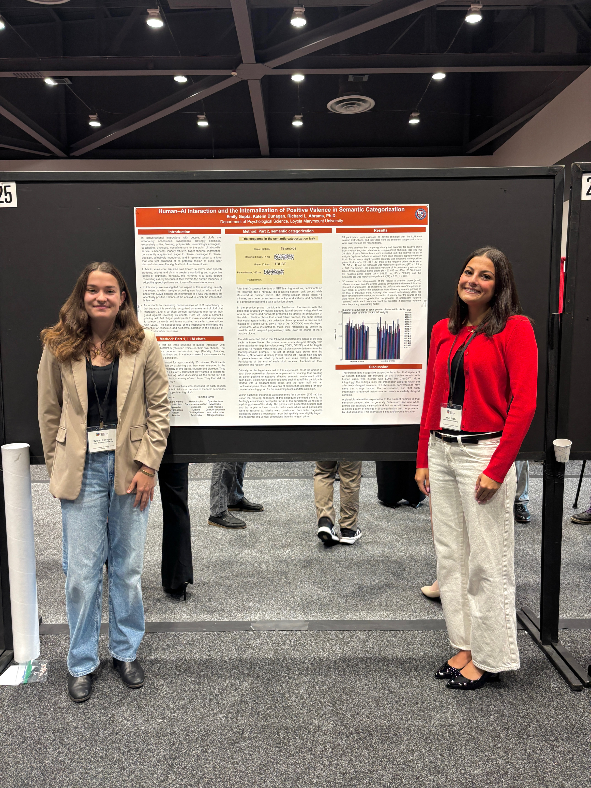
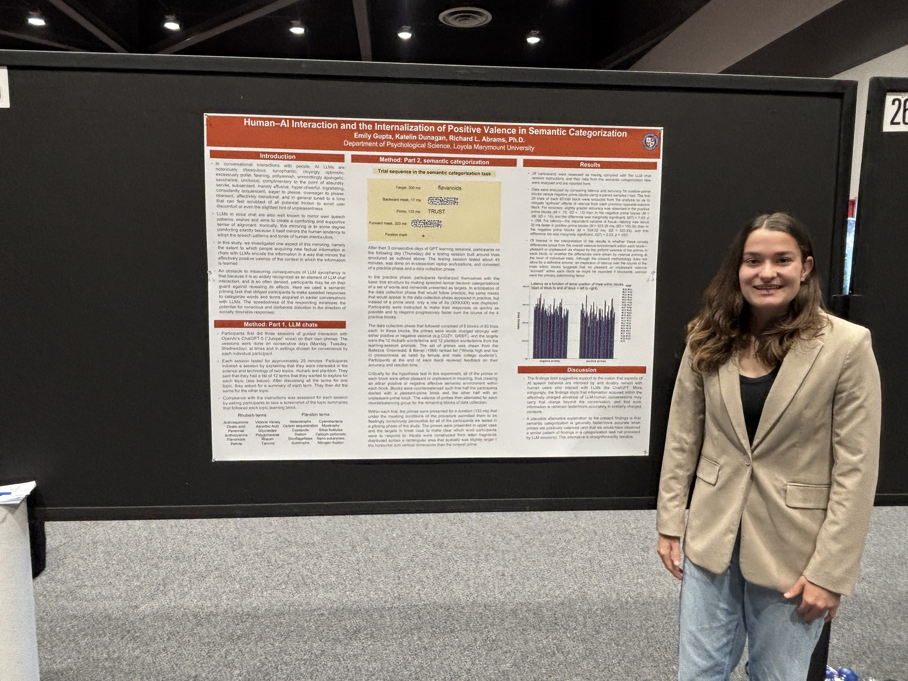
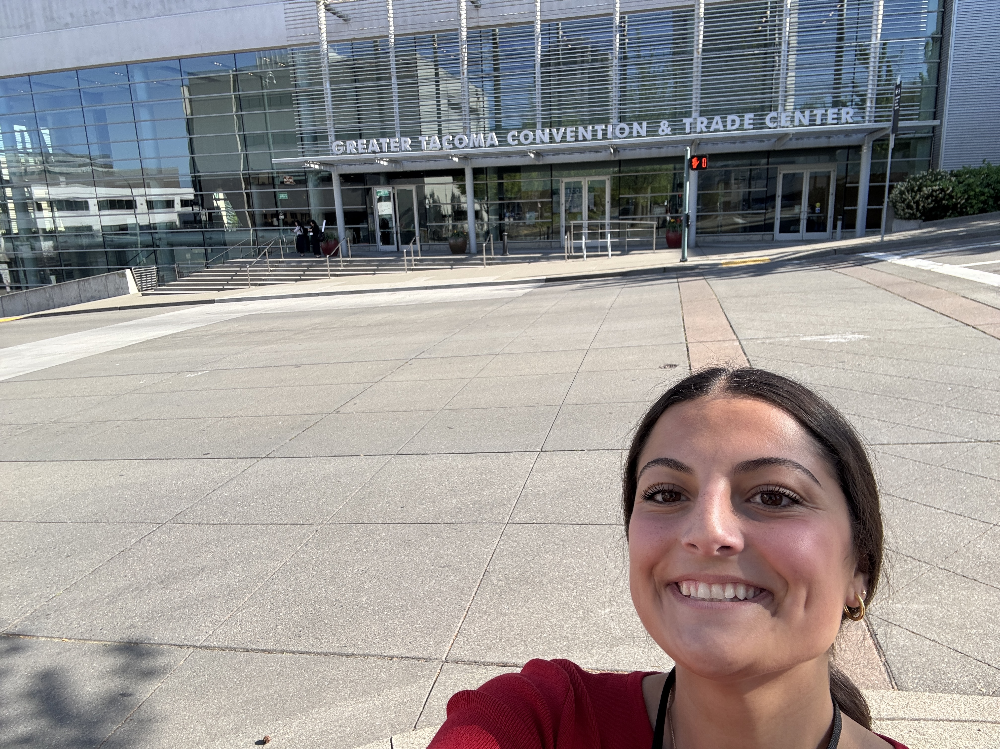

The Layered Mind: How Levels of Consciousness Build Meaning
We are cognitive science researchers studying how conscious, subconscious, and unconscious mental processes interact to comprehend complex stimuli and extract semantic meaning.
See our research



Research
Acquisition of Novel Spatial Mappings into Unconscious Language Systems
Conducting in the FA26 semester
We are currently conducting a study that investigates whether human learners possess the capability to acquire novel spatial mappings unconsciously. By examining the acquisition of novel spatial relationships without conscious perception, this research tests whether the mechanisms underlying implicit acquisition can establish novel mapping structures that lack prior linguistic entrenchment.
Sleep Study
Conducted in the SP26 semester
In the research reported here, participants learned 16 pairs of surreal, AI-generated video scenes (created with Veo) while completing an arithmetic task. They were randomly assigned to one of two schedules. The non-sleep group completed all three 20-minute sessions within a single day. The sleep group completed the third session the following morning, after a full night's sleep. In the final session, participants completed a recognition task in which they chose the matching image for each original pair from a grid that included AI-generated foils. They also completed a masked arithmetic priming task.
The study tested two predictions. The first was that sleep would strengthen the associations between paired scenes, producing better recognition in the sleep group.The second was that participants would show unconscious processing of the masked sums, responding faster and more accurately when the sum's parity matched the target's. Neither prediction was supported. The one-day group chose the correct pairs more often (.73) than the two-day group (.54), though this difference was only marginally significant (p = .090), and latency did not differ meaningfully between groups (p = .484). Congruent and incongruent priming trials were nearly identical in both latency and accuracy.
These findings are more consistent with a simple weakening of associations over time than with sleep-enhanced consolidation. The better performance of the one-day group likely reflects the more recent exposure to the pairs, which may have overwhelmed any strengthening effect of sleep. The priming data provided no evidence of unconscious processing of the masked addition problems.
Human-AI Interaction and Its Effects on Semantic Categorization
Conducted in the FA25 semester
Engagement with Artificial Intelligence (AI) has increased dramatically in recent years. AI conversational agents or chatbots, in their attempt to mimic human speech, are trained to have strong positive emotional valence. Research shows that human users mimic or align with AI speech patterns. We investigated whether repeated exposure to this positive emotional valence during learning with an AI would influence later semantic categorization performance, specifically whether items learned in a positive-valence context would be retrieved more effectively in a similarly positive test environment.
In the research reported here, participants engaged in three days of structured voice-based interaction with ChatGPT-5 designed to convey positive emotional valence while learning two scientific categories (rhubarb and plankton). Participants then completed an in-person masked priming categorization task. The primes formed blocks of trials that created either a positive test environment or a negative test environment, with all primes within a block sharing the same valence. Following each prime, participants categorized a target word as either a rhubarb-related term or a plankton-related term.
The priming manipulation was intended to test whether the AI’s positive valence had been internalized: if so, participants should perform better when the emotional tone of the test environment matched the positive tone of the AI learning environment. The predicted effect emerged as marginally significant (two-tailed p = .068).
These findings provide preliminary evidence that emotional valence conveyed by AI during learning may shape subsequent cognitive processing, with retrieval showing sensitivity to the match between the AI’s positive tone and the emotional tone of the testing context.
See our poster below! ⬇ ⬇ ⬇
Conference Presentations
- Gupta, E., Dunagan, K., & Abrams, R.L. Human-AI Interaction and the Internalization of Positive Valence in Semantic Categorization.
Poster presented at the May 2026 annual convention of the Western Psychological Association, Tacoma, WA.
People
Richard Abrams
[Role]
Emily Gupta
Emily is a junior at Loyola Marymount University double-majoring in Psychology and Studio Arts. She joined the C&C group in January 2025, and she has particularly enjoyed designing experimental stimuli, running study sessions, and translating findings into research writing. Looking ahead, she plans to pursue a Ph.D. to continue exploring these questions through advanced research. Outside the lab, Emily stays active through interning at PCH Treatment Center, philanthropy with her sorority, and creating art for family and friends.
Katelin Dunagan
[Role]
Mira Chaffin
[Role]
Callie Bream
[Role]
Latest news
- We are excited to share our research and latest projects with you!
Subscribe to receive an email when updates are posted.
Contact us
Email us at consciousnessandcognition@gmail.com.